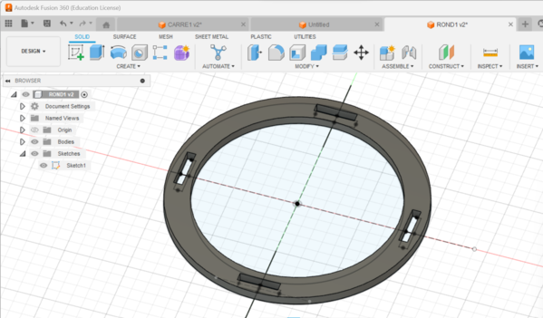
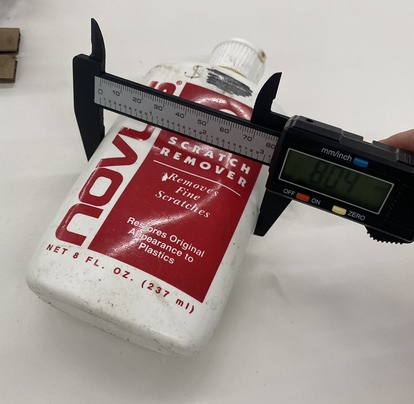
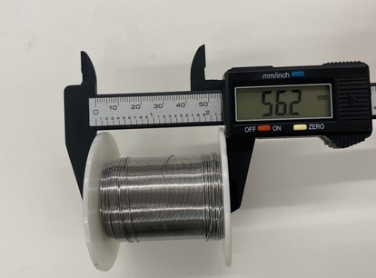

<br>
#### Week 2: 2D Design & Cutting
<i> Assignment:
Create a press-fit construction kit that can be assembled in multiple ways, and accounts for lasercutter kerf.
Examples: Kassia's triangles, Chris's pencil holder, Kian's Moose
Work through a Fusion 360 tutorial, like this or some of these (or similar if you are using other software) and document what you produce.
Select at least 2 household objects or components from the lab (could be items you think you might include in your final project). Measure them using calipers, and model them in Fusion 360 (or other program). Create an assembly using these components, and document your work on your webpage. You may also incorporate items from other 3D model repositories like GrabCad. </i>
And here is a <a href="https://nathanmelenbrink.github.io/intro-dig-fab/02_cutting/index.html">Link to the original assignment page</a>
This week, we learnt laser and vinyl cutting and we had a demo on blender and Fusion 360.
As I have previously mentionned, I know how to use Solidworks which is similar to Fusion 360. So when I saw the assignemnt at first I wasn't worried. Let me tell you that I was WRONG! My Solidworks skills left my body and I had to relearn to use a 3D modeling software from scratch. I did it a bit solo and I also followed the Fusion 360 tutorials. Luckily, as I got used to Fusion 360, I remembered how to use this type of software (the basics at least).
To complete the assignement, I didn't really know what to make so I figured I would just print some random pieces. I struggled at first because of fusion 360 but mostly because of the laser cutting part and I had some failed printings.
I decided to keep the simple square we all kind off "had to" make to build my press-kit.
<p>Here it is on Fusion 360:</p>
<p>Then I decided to use arcs to have another shape. To do this, I drew 2 circles on Fusion 360 with 2 different diameters. I then drew a small rectangle between the 2 circles. I then used circular pattern to make 4 cut-outs around the circles, as for the square. I added lines to split all the 4 rectangle in 2 smaller ones. This gave me 4 arcs at once.</p>
<p>Here it is on Fusion 360.</p>

<p>Then I moved on to the laser cutting after some failed attempts.(For example, the first time I forgot to remove construction lines so my square was cut in half).
I first printed one square and 4 arcs to see if it fitted and It did.
Then I figured I would make a sphere so I printed 8 more arcs and 4 more squares.</p>
<p>Here is a photo I took during the laser cutting process.</p>
<p> I figured I would print the 4 arcs with the square in the center so that I would take less space on the cardboard. I got lucky the first time because it started to laser cut the square first then the arcs but the second time it started with the arcs which means this could have been an issue. Luckily, the kit worked and everthing assembled correctly. I need to remember to set priorities when cutting with a center piece as we were taught to.</p>
<p>As that was my goal, after printing I went straight to building a sphere. Then I made other small assemblies, as you can see in the photos below.</p>
<img src="kit1.jpg" />
<p> Let's move on to the second part of the assignment! In the lab, I took some measurements: a bottle and a coil wire.</p>

<p> Both objects were pretty easy to modelised so I decided to make another one.<p>